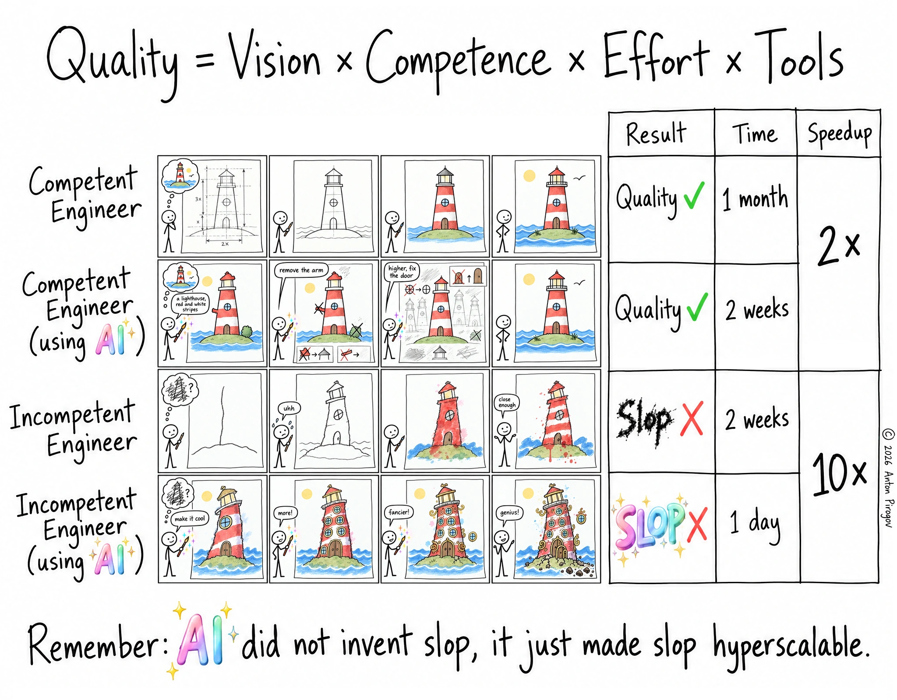

Making Of My First Webcomic: ‘Quality’

I finally did it – I made and published a webcomic! One more item off my bucket list. Now I will spam it everywhere, hoping that it goes viral and I get my well-deserved two seconds of internet fame…
On a more serious note: as a long-time follower of various webcomics, such as xkcd, SMBC, Existential Comics and many more, I often wish I had some more talent for drawing, or enough motivation and persistence to learn it. But having more than enough other hobbies already, I decided that I won’t try to become a visual artist, at least not in this life.
That does not change the fact that I regularly have ideas for comics that I wish somebody would draw for me, based on my script and rough sketches – for free of course (if anything, they should thank me!). Unfortunately, this is not how it usually works. But lucky me: it is 2026, and we have AI!
So I took the route of the second row in the comic, compensating my complete lack of drawing skills by a clear vision, focused effort and usage of less traditional tools I happen to know how to use more or less effectively1.
TL;DR: Used Tools and Method
- OpenWebUI
- GLM-5.3 Flash via Neuralwatt
- GPT Image 2.5 Sunburst via imagerouter.io
- Good old GIMP
All it took was:
- two evenings, in which I did
- 46 iterations on the 4x4 panel comic, and
- 5 iterations on the side table and outer text.
For the table and outer text2, I explicitly requested that the actual comic panels are replaced with a placeholder or rough sketch, because doing everything correctly in one shot was too much to ask. I did the final assembly and some minor fixes by hand the old-school way, using GIMP – it was not just cheaper, but also easier and faster that way (and now I can honestly claim that, technically, it was not just prompted).
Lessons Learned
One thing I learned is that the text model you use to drive an image model is almost as important as the image model itself. Keeping track of my requirements and feedback over a longer conversation and integrating all that coherently into an increasingly complex image prompt is as important as the ability of an image model to produce exactly what the prompt describes. In hindsight, this is obvious, but this is the first time I used an image generator in such a “serious” way, i.e. with a pretty clear and quite complex visual scene in my mind, and not just messing around.
Another thing – which I actually knew from using LLMs for coding, but now saw how it equally applies to image generation – is this: Even the best model will bring you 80% towards the result in 20% of the time, 95% in the remaining 80% of the time, and if you care about the final 5%, just do it yourself. Generative AI is a rough brush to paint with, so trying to get tiny details right without messing up something else has quickly diminishing returns. But of course you can keep playing whack-a-mole forever (or until your budget runs out), if you like.
Punchline Meta-Confirmation
If I made a time-lapse from all the 46 iterations it took me to get to the final version, you would see how it also nicely complements the point of the comic pretty well:
- I got rough sketches with some neat details within the first 5-10 iterations
- I arrived at my “80%” mark around halfway, where most elements have settled
- I spent the rest fighting with tiny details you might not even notice
But this is exactly the effort and meticulous refinement that distinguishes slop from quality. There are still various imperfections in it, some glitches I did not bother or did not know how to fix without sinking much more time into this, but I am very satisfied with the result. I know every pixel, every visual detail of this comic, and I think that even with its remaining flaws, its perfectly fine as it is.
Probably nobody will look at it as closely as I did3, and had I drawn it by hand, it would have a lot of different kinds of imperfection. In fact, I am certain that it would have been inferior in all regards but one – the hand-drawn comic that I could have produced, in all its incompetent ugliness, would have been free of the “AI stigma”.
Conclusion
Image models are usually marketed for their stylistic abilities, but my actual graphical requirements were quite modest, nothing that an image model from a few years ago could not do, in terms of texture. What is much more important than texture in a multi-panel comic is precision and consistency. All the typical AI glitches and prompt deviations are just much more noticeable in this setting than in some cliche overloaded hyperrealistic ad-hoc scene that looks like a stock image.
Overall, even though I have the feeling that I brought it close to its limits, I am left pretty impressed by GPT Image 2.5 Sunburst, which was just released a few days ago. I think that generating a whole 16-panel comic with various cross-constraints (some things must be the same or similar, some things must differ in specific ways, some things must evolve at a certain pace), all while keeping a consistent visual language – its definitely showing me that frontier image models are much more than toys, they are proper tools which are good enough for the kind of things I want to do. Meanwhile, GLM 5.3 Flash showed that it is not just a great and affordable coding agent, but is also equally suitable as a front-end for image models.
Having seen what is possible these days, I am quite certain that this will not be the last comic or illustration I will create this way. Maybe next time I will try to use image-to-image and inpainting to patch up minor issues. I have not experimented with this kind of thing since SD 1.5 (which was the last interesting model that happened to fit on my 6GB VRAM GPU), so maybe it also works much better now.
-
Whether I actually succeeded, or you believe that the result is reminding you more of the fourth row, is of course a matter of your taste and judgement. ↩
-
I absolutely could have done the second part completely without AI, or just using it to generate words needing special styling – and this is in fact what I planned to do originally. But probably it would have taken more time and I would not get a table in a hand-drawn style. Not sure if copying a screenshot of a table from LibreOffice into GIMP and fighting with textboxes, fonts and layers would have been in any way a nicer experience than what I ended up doing. That I actually could do it like this shows how far the text rendering capability of image models has come over the years. ↩
-
Of course, now you will, and then you will find all the weirdness, and then you will hate it, and then I will feel sad and ashamed and end my comic creator career prematurely. ↩